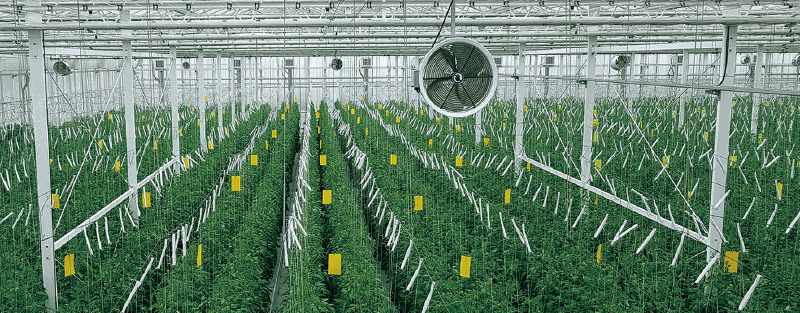
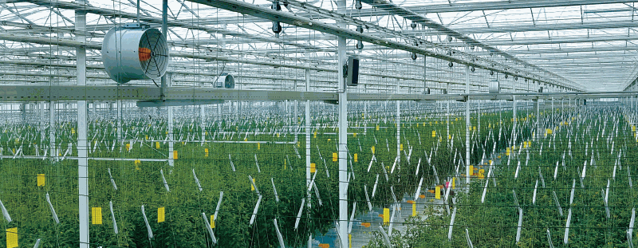

온실 내부 설치 사례
시설 크기와 구조, 작물 배치를 확인한 뒤 순환팬의 설치 위치와 수량을 검토합니다.


설치 검토 최종 위치와 수량은 시설 구조·작물 배치·필요한 공기 흐름 및 사용 전원을 함께 확인해 결정해야 합니다.
시설 크기와 구조, 작물 배치를 확인한 뒤 순환팬의 설치 위치와 수량을 검토합니다.


설치 검토 최종 위치와 수량은 시설 구조·작물 배치·필요한 공기 흐름 및 사용 전원을 함께 확인해 결정해야 합니다.